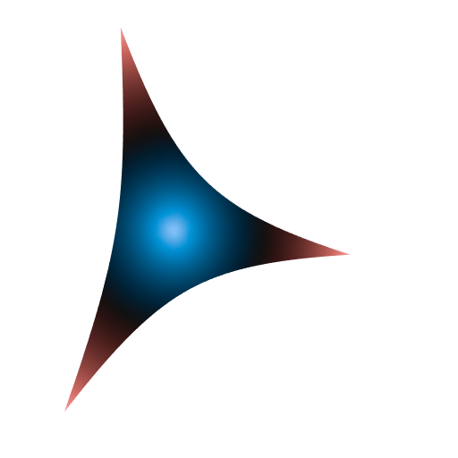
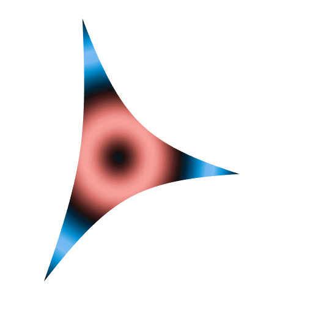

Gyrotriangle (aka hyperbolic triangle) with moving colors
My package gyro has been freshly released on CRAN. I implemented the ideas given in this blog post in this package. It has a short vignette.
The gyrodemos function provides some examples. But none of them explains how I did the moving colors on this polyhedra that you can see on the Github repo:

So I will explain here. In fact, this is similar to the method I presented here for PyVista and here for rgl.
The gyrotriangle function of the gyro package has a palette argument, in which the user provides a vector of colors. Here is an example:
library(gyro)
library(rgl)
s <- 0.6 # hyperbolic curvature
A <- c(1, 0, 0); B <- c(0, 1, 0); C <- c(0, 0, 1)
ABC <- gyrotriangle(
A, B, C, s = s,
palette = hcl.colors(n = 256, palette = "Berlin")
)
open3d(windowRect = c(50, 50, 562, 562))
material3d(lit = FALSE)
view3d(10, 40, zoom = 0.8)
shade3d(ABC)
Under the hood, the gyrotriangle function uses the colorRamp with the vector of colors passed to the palette argument. This creates a function, let’s call it fpalette, that assigns a color to each number in the interval \([0, 1]\). Then, gyrotriangle calculates all the distances from the points in the mesh forming the triangle to the gyrocentroid of the triangle. Finally, it linearly normalizes these distances to the interval \([0, 1]\), and it applies the fpalette function to the normalized distances.
Now, the gyrotriangle function has a g argument. This is the key to make the moving colors. This argument g must be a function from \([0, 1]\) to \([0, 1]\), by default it is the identity function, and fpalette is actually applied to the normalized distances transformed by g.
So, here is how we can do to get some moving colors:
shift_ <- seq(0, 1, length.out = 61)[-1]
for(i in seq_along(shift_)){
ABC <- gyrotriangle(
A, B, C, s,
palette = hcl.colors(n = 256, palette = "Berlin"),
g = function(u) (sin(2*pi*(u - shift_[i])) + 1) / 2
)
open3d(windowRect = c(50, 50, 562, 562))
material3d(lit = FALSE)
view3d(10, 40, zoom = 0.8)
shade3d(ABC)
rgl.snapshot(sprintf("snapshot%03d", i))
close3d()
}
library(gifski)
pngs <- list.files(pattern = "^snapshot")
gifski(
pngs,
gif_file = "gyrotriangle.gif",
width = 512,
height = 512,
delay = 1/8
)
file.remove(pngs)